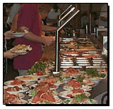
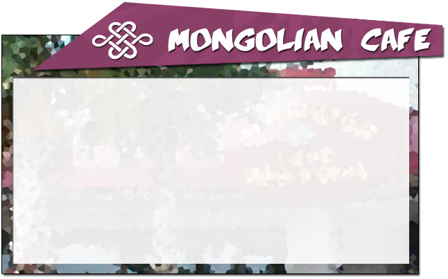

1234
Some Street
Houston, TX 12345
(314)182-3817
Testing 123 temp text here “Enjoy Food that is Creatively Inspired”
The food you are about to experience is Mongolian BBQ.
What the heck is Mongolian Barbeque ??
Take a numbered
clip from your table and attach it to a plate.
You can find plates at the beginning of the line.
Create your own plate by choosing rice or noodles,
many different fresh vegetables and a variety of meats & poultry, and
topping it off with your choice of oils and sauces, and lots of spices.
The chef will perform the stir-fry show on our center Grill, and
the waitstaff will bring your personally selected concoction to your seat.
Please also help yourself to soups and a variety of other hot-n-cold appetizers.
And don’t forget to save room for our famous desserts!
Enjoy the upbeat & interactive dinning experience here
at
Mongolian Café!
